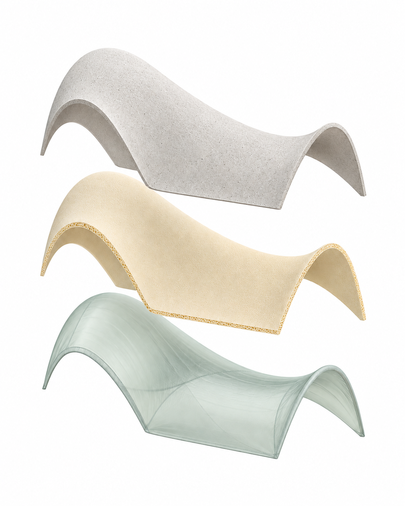
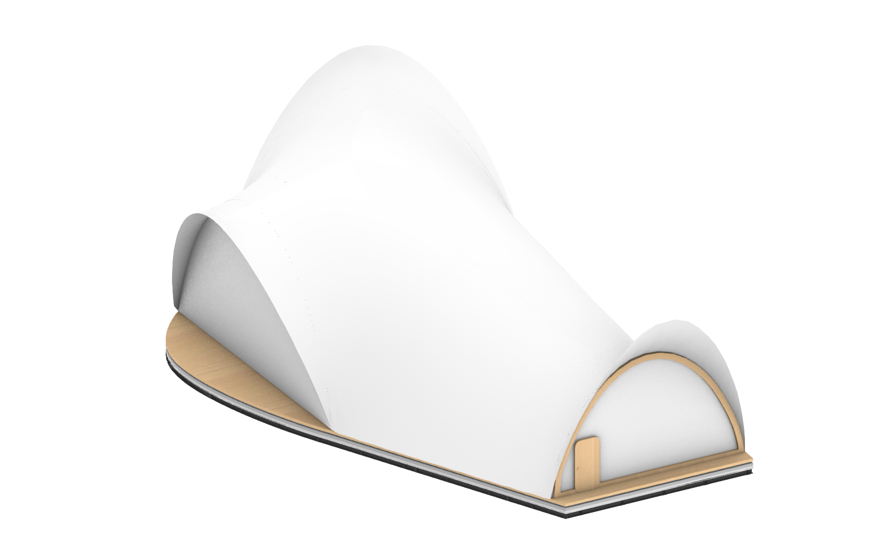
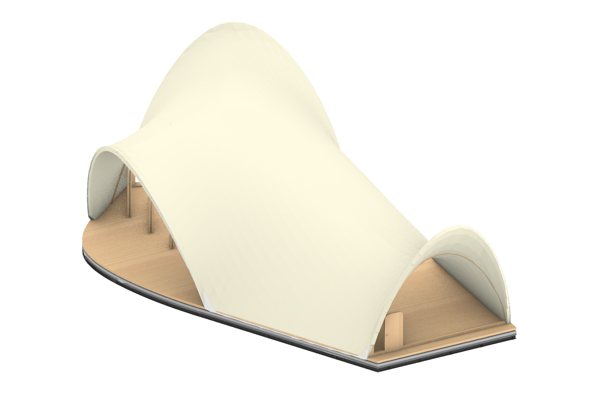
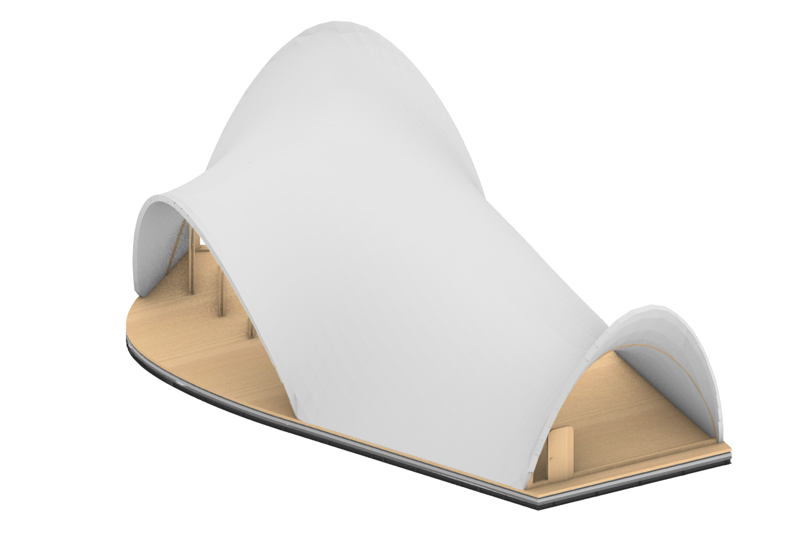
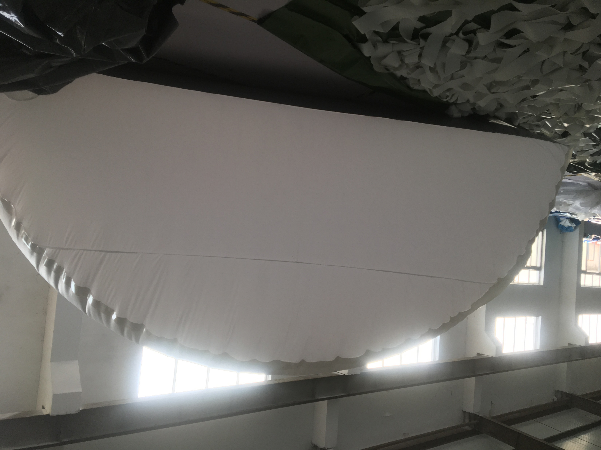
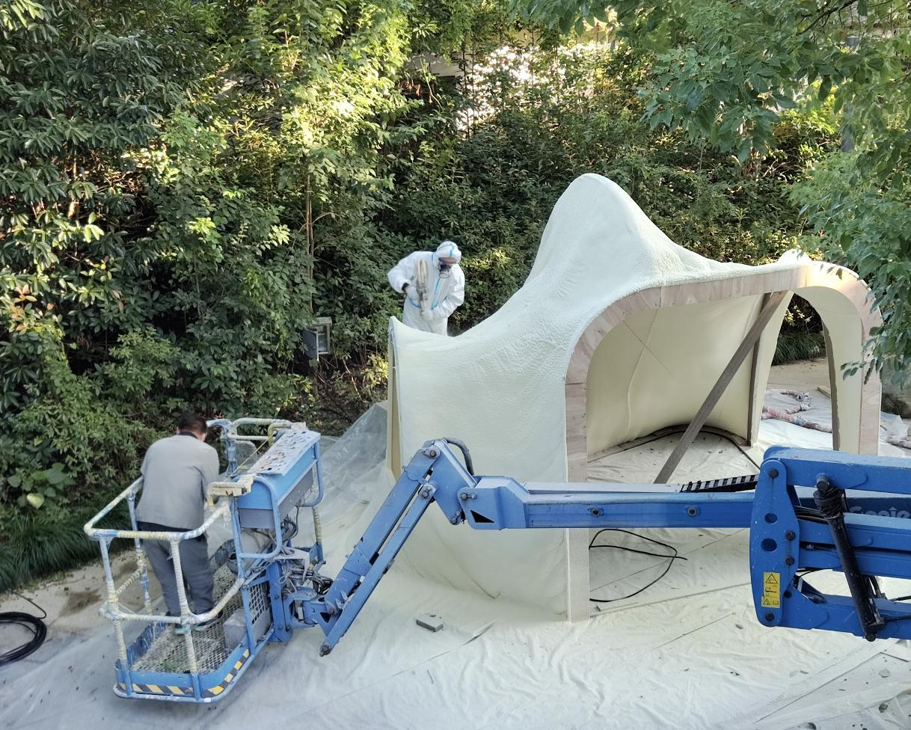
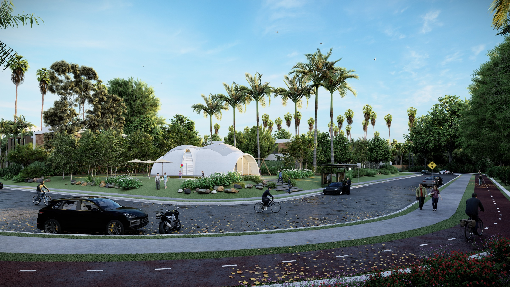
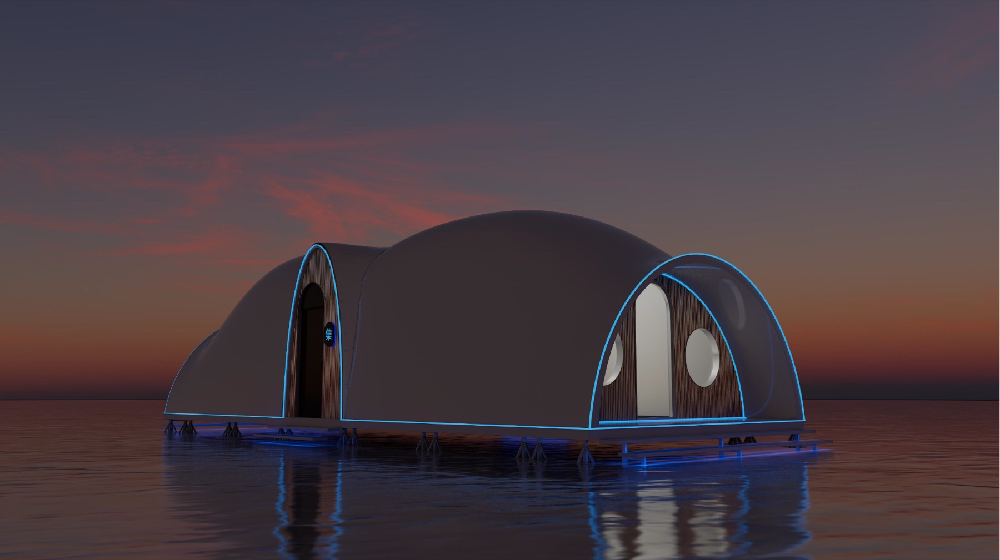
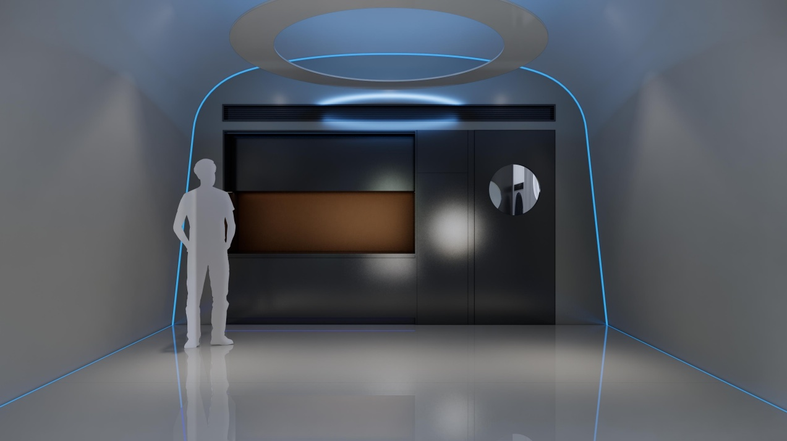

01Air shapes the mould. Spray forms the shell.
A flexible membrane sets the curvature; polyurethane and concrete turn it into an insulated enclosure.

Concrete
The outer shell
Polyurethane
Shape & insulation
Inflatable membrane
The temporary mould

Inflate the mould

Spray polyurethane

Remove mould; spray concrete
02The method, in material.
Related research informed the proposal: flexible formwork and material spraying, shown here in separate physical trials.


03From modules to a living space.
In the related modular study, prefabricated parts support an inflatable mould; sprayed layers form the enclosure.
Process illustration · redrawn from the modular-system study.


